Since 2010 teams from Blue Bottle Coffee to NASA have followed Google Ventures' lead in running five-day design sprints. The idea, as presented in Jake Knapp's book "Sprint," is to follow a strict agile framework designed to promote disruptive thinking and deliver results quickly.
In my Project Management and Innovation Ideation class we broke off into small teams to run through a design sprint of our own.
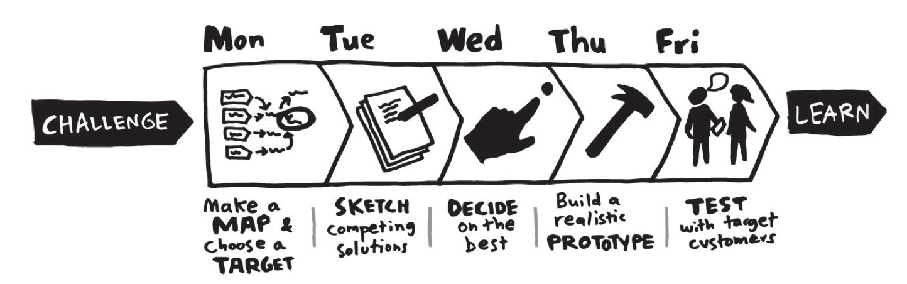Grabbing a conference room with a whiteboard wall, we wrote our goal on the top: “match students of all disciplines with electives that align with their professional and personal goals.” According to Knapp, “magic happens when we use big whiteboards to solve problems . . . [they serve as a] shared brain.”
We also mapped out key actors. This included our target market as well as experts who may have knowledge to contribute. Our market was university students looking for guidance on finding classes. Of course a solution already exists — academic advisors; so, these advisors were our experts.
From talking to students around campus, academic advisors weren’t cutting it. Since they serve just one of UGA’s many colleges, they’re unequipped to recommend courses outside of their given college.
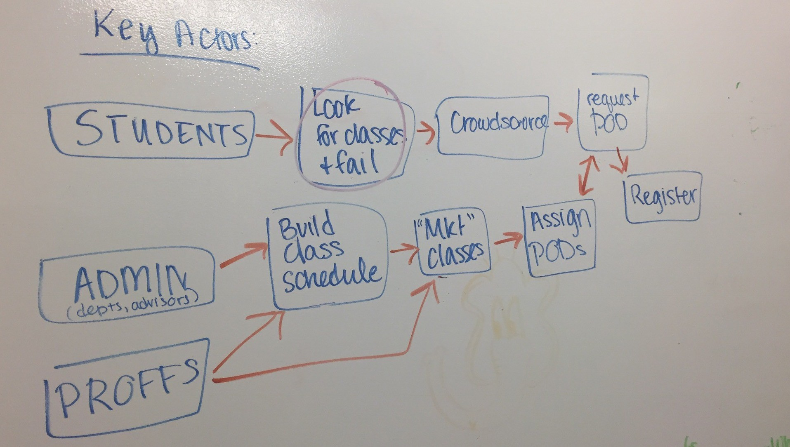We learned that students and advisors alike faced a common problem — UGA’s many separate colleges didn’t communicate course choices well to each other.
With our problem identified, Class Match was born.
The second day of our sprint played out like a collage. We each came to the table with ideas other sites had implemented that we thought could work well with Class Match.
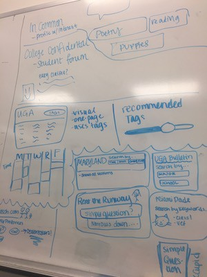Match.com and Apple Music gave us insight into providing users with tailored choices based on their preferences. Other university’s sites like that of the University of Maryland and Miami Dade illustrated unique ways to display course offerings.
Finally, we made individual sketches to present the following day.
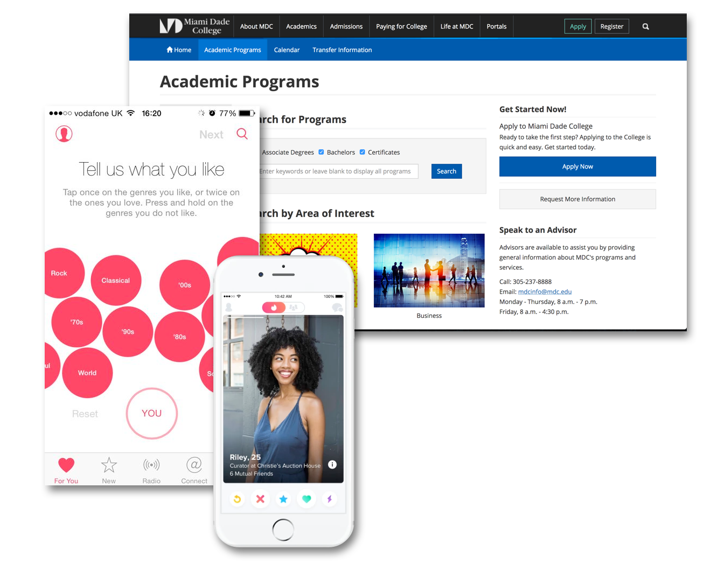On Wednesday we created an art gallery by taping our rudimentary sketches from the previous day up on the walls of our creative space. Each was given a memorable name (among them “Boy With Apple” and “Mona Lisa”) and attributed to Anonymous.
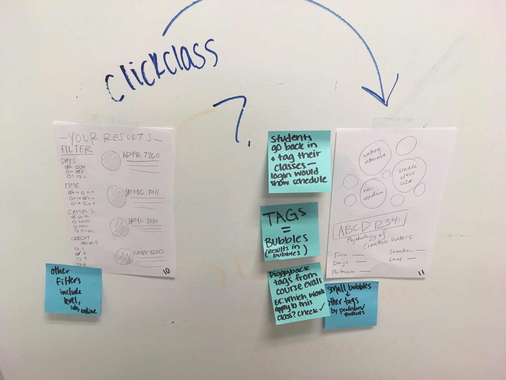By concealing authorship we were able to overcome barriers that ordinarily taint these choices.
Groupthink is another poison. To avoid it, we instituted a rule of silence and each individually looked at separate sketches. We then placed adhesive dots to highlight the parts of each sketch we loved best.
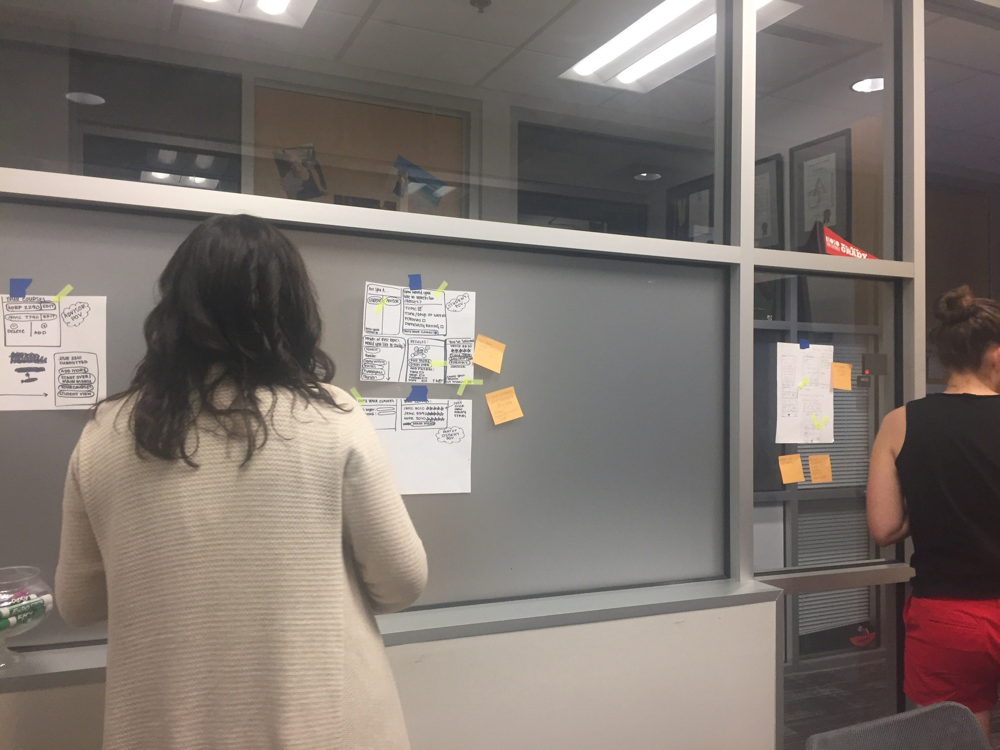Finally we broke the silence. Designs were critiqued by the group then each artist claimed their piece and explained its logic.
We then took the most popular bits of each sketch and, like Dr. Frankenstein, stitched them together into a cohesive storyboard.
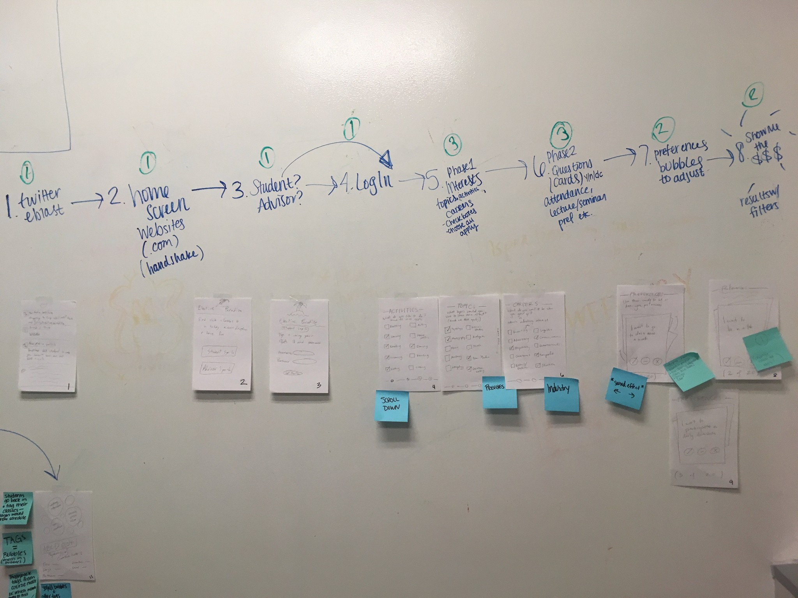Now to digitize our storyboard just enough to fool users into thinking it’s real. Coding the whole thing out sounds tempting, but Knapp urges against it: “Wasting time on the wrong thing is a major bummer.”
There’s a good reason everything up to this point has been on paper, post-its, and whiteboards. These mediums are just enough to convey your point without becoming too invested.
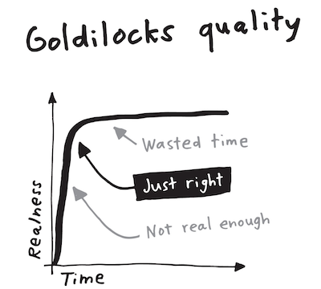Similarly, your prototype should be just enough to convince your user it is real. Putting too much work into a prototype will make your team more attached to that prototype and it will be harder to pivot based on the feedback you’re searching for with your sprint.
Think of the folk stories "Steve Jobs and the Golden Path" or "Goldilocks"
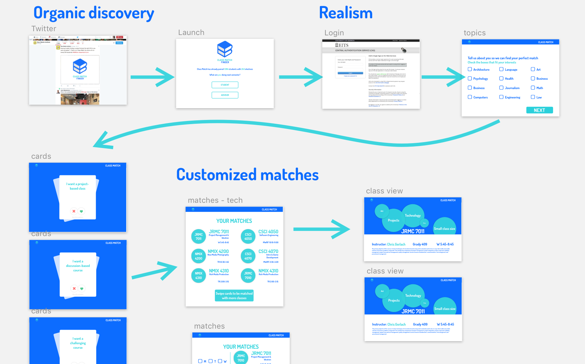It was finally time to test our product on the target audience. We grabbed two rooms side-by-side by a coffee shop on campus. This was the perfect place to find a diverse pool of students from UGA’s different colleges.
In one room was our interviewer, the prototype running on a computer, and a video camera on a tripod. Our other room was the command center. Myself and another team member screen-shared with the prototype laptop in the other room and listened in on the conversation.
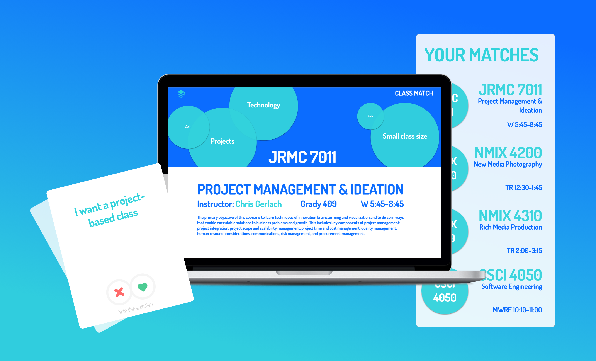To work, our prototype had to give users a tailored list of classes they matched with. All without a single line of code.
From the command center I monitored the users’ responses and made live updates to our Marvel prototype that sent users one of several class lists that most lined up with their goals and values.
In the end, we received tons of valuable feedback on the product. Design sprints are an amazing process that should be in any project managers toolkit. It takes the best aspects of different agile methodologies and fuses them into an intense and rewarding week-long experience.
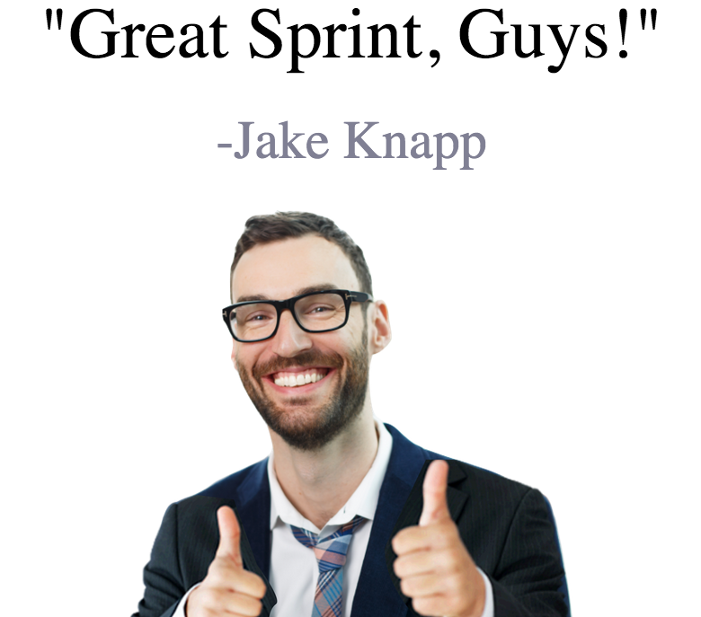